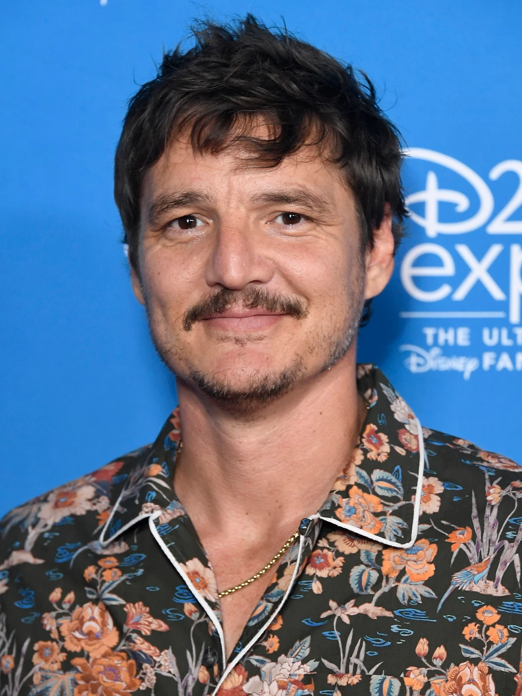

Biográfia Pedro Pascal

José Pedro Balmaceda Pascal
Nascimento:
2 de abril de 1975 (idade 48 anos)
Altura:
1,8m
Carreira
Pascal apareceu em inúmeras séries de tv, incluindo Buffy, a Caça Vampiros, The Good Wife, Homeland, O Mentalista e Graceland. Interpretou o sequestrador Reggie em Law & Order: Criminal Intent, episódio "Weeping Willow". Em 2011, estava escalado para o piloto da adaptação televisiva da série Wonder Woman,[4] mas a série não foi ao ar. Em junho de 2013 interpretou o príncipe Oberyn Martell na quarta temporada da série de tv da americana HBO Game of Thrones[5] e, em 2015, interpretou o agente americano do DEA Javier Peña na série original do Netflix, Narcos.
Pascal tem extensa experiência como ator e diretor de palco, recebendo o Los Angeles Drama Critics Circle Award e o Garland Award pelo papel na International City Theater produção Órfãos.
Em 2015, Pascal co-estrelou com a modelo Heidi Klum o clip "Fire Meet Gasoline" da cantora australiana Sia.
Em 2016, interpretou Tovar no filme A Grande Muralha ao lado de Matt Damon.
Em 2019 e 2020, o nome de Pedro Pascal está em evidência em razão de sua atuação no papel principal da badalada série The Mandalorian, que estreou no Disney+ em 12 de novembro de 2019.[6][7]
Em 2023, Pedro Pascal atuou no papel principal de Joel na série intitulada The Last of Us, da HBO, contracenando com a atriz britânica Bella Ramsey.[8]
The Last Of Us
Joel, um sobrevivente duro e cínico, e a jovem e impetuosa Ellie se conectam pela dificuldade do mundo em que vivem. Juntos, eles enfrentam circunstâncias brutais e monstros impiedosos durante uma difícil jornada pelos EUA após um surto apocalíptico.